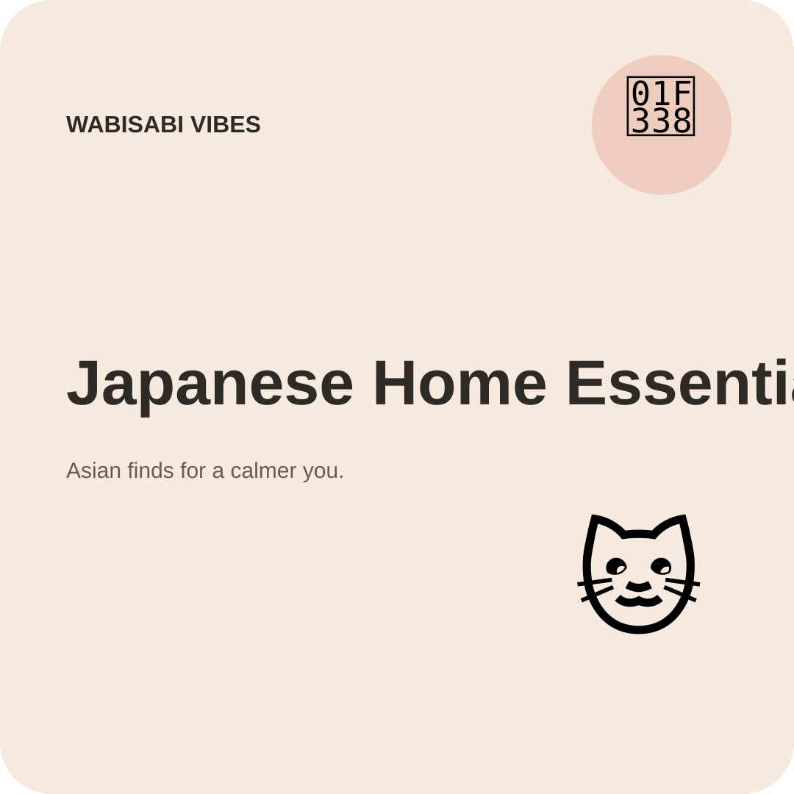
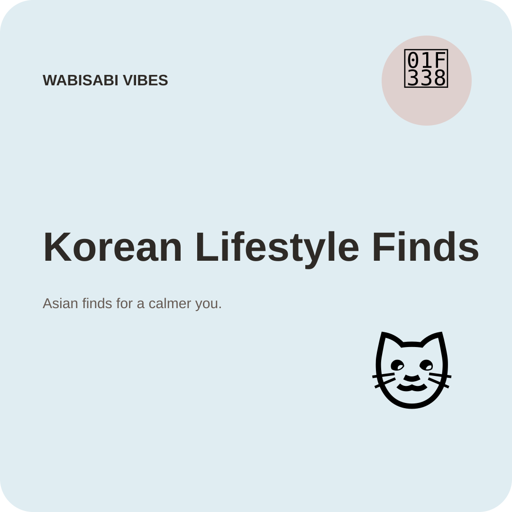
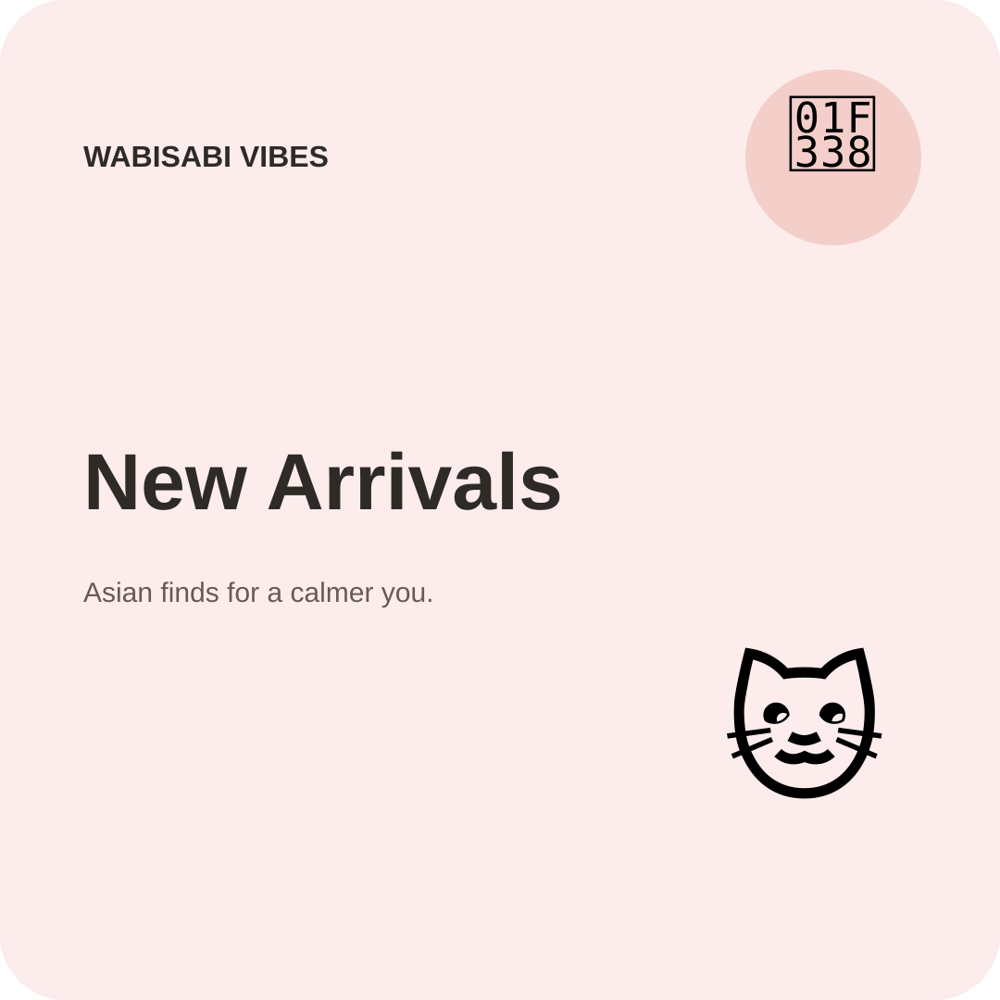

Journal
Japanese-Inspired Minimalism for Small Spaces
Simple ideas for making a small room feel calmer without removing its personality.
Read article →Notes on everyday design, Asian lifestyle and the little things worth noticing.

Simple ideas for making a small room feel calmer without removing its personality.
Read article →
A closer look at useful objects, thoughtful design and everyday rituals.
Read article →
A practical guide to choosing something personal without relying on clichés.
Read article →